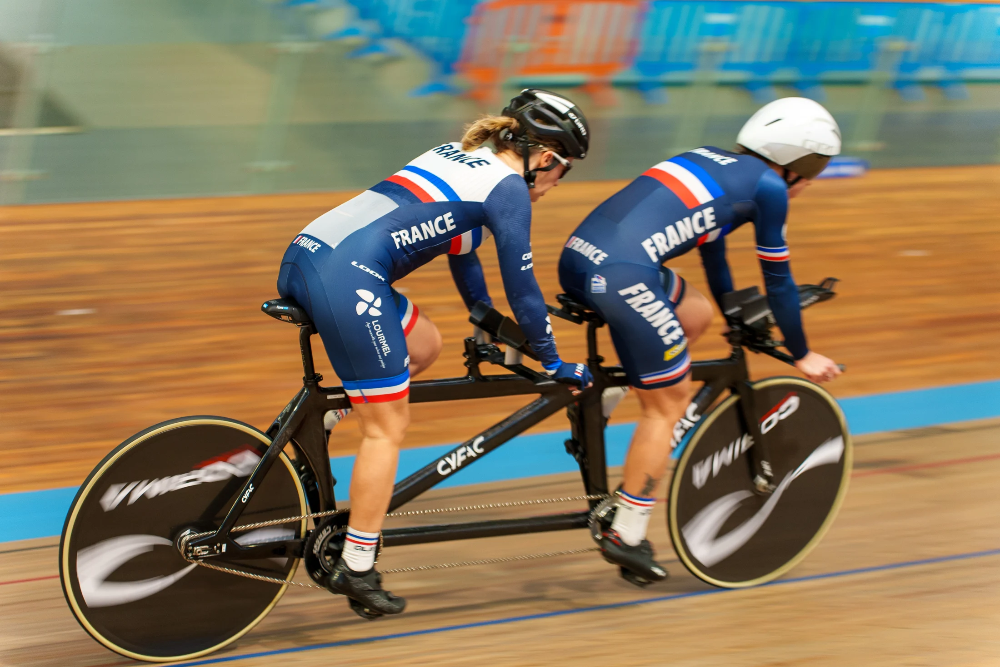
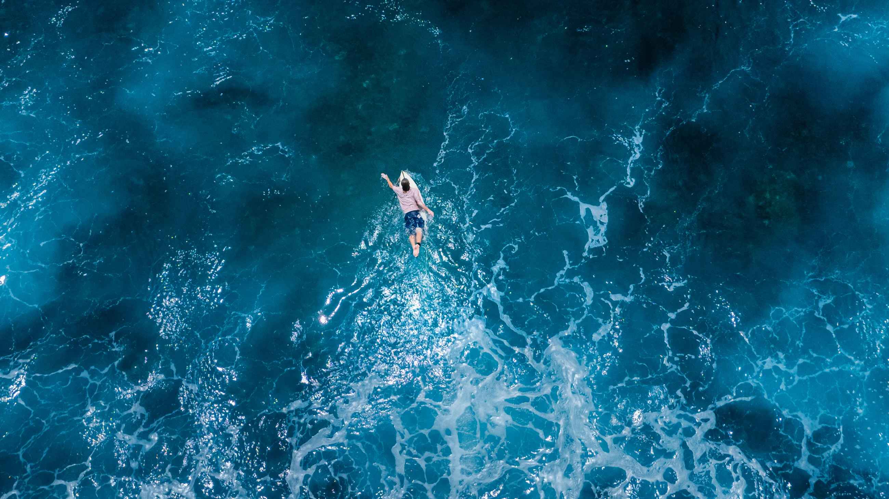
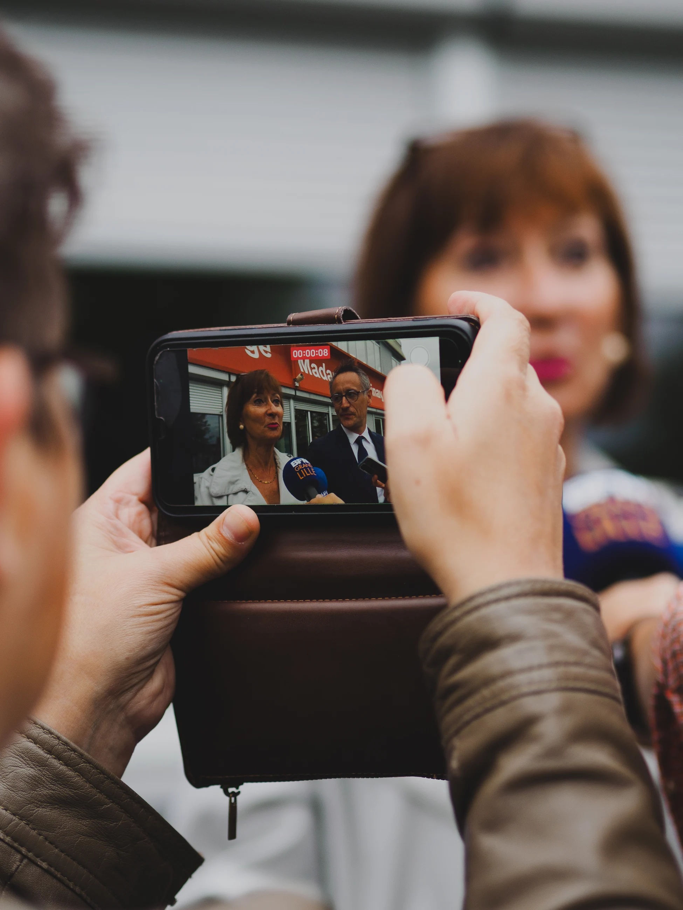
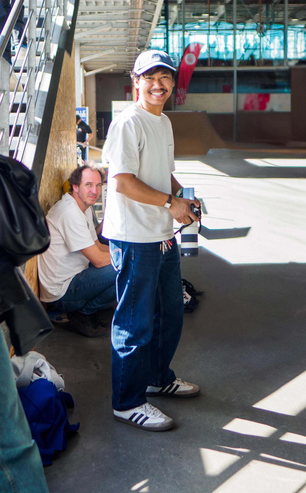

Au cœur de l’action SPORT / PHOTOGRAPHIE

Des personnes, du mouvement et des histoires.
Photographie · Vidéo · Reportage

Au cœur de l’action SPORT / PHOTOGRAPHIE

Au plus près des personnes REPORTAGE / PHOTOGRAPHIE

Je mets en image vos projets et vos événements de l’intérieur, pour que celles et ceux qui les voient aient envie d’en faire partie.
Avant de filmer, je prends le temps de comprendre votre projet et les personnes qui le font vivre. Puis je restitue ce qui se vit sur le terrain avec justesse et fidélité.